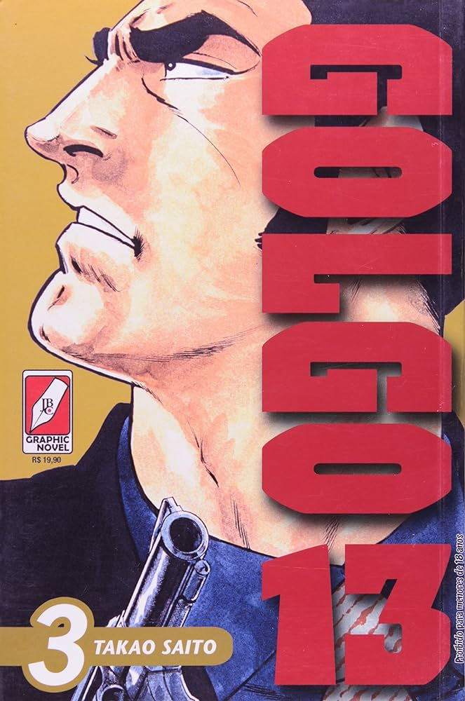
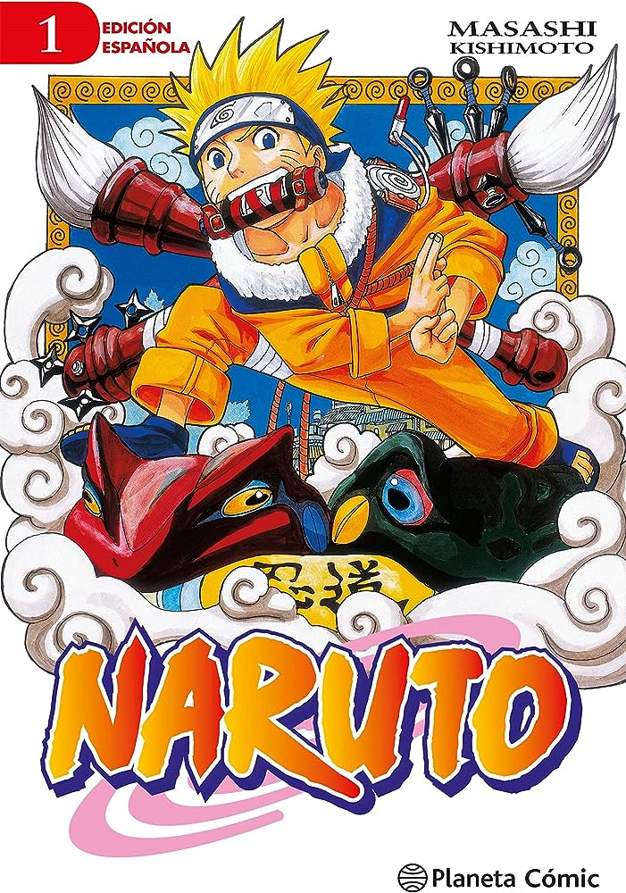

Esta es una lista de los 5 mangas más vendidos de la historia:
1: One Piece (Shōnen)
Actualmente, One Piece es el manga más vendido de la historia con más de 516 millones de copias vendidas.
Este manga cuenta la historia de Luffy, un niño que desea convertirse en el rey de los piratas encontrando
un tesoro lengendario conocido como el One Piece.

2: Golgo 13 (Seinen)
Golgo 13 es el segundo manga más vendido de la historia con más de 300 millones de copias vendidas.
La historia trata sobre un asesino a sueldo que realiza trabajos a cambio de una compensación monetaria.
Es el manga más longevo, con más de 50 años en publicación y continua publicándose en la actualidad.
3: Detective Conan (Shōnen)
Detective Conan es el tercer manga más vendido de la historia con más de 270 millones de copias vendidas.
La historia trata sobre Shinichi Kudo, el detective juvenil más famoso de Japón, es testigo de un
intercambio sospechoso de dinero, por lo que es atacado por uno de los hombres que acompañaban al
hombre vestido de negro, inyectándole un veneno que en lugar de matarlo, cambió su apariencia a la
de un niño de 7 años.
Con este nuevo aspecto decide investigar crimenes ocultando su identidad anterior.
 s
s
4: Dragon Ball (Shōnen)
Dragon Ball es el cuarto manga más vendido de la historia con más de 260 millones de copias vendidas.
Este manga es el más conocido en todo el mundo siendo muy famoso en España y países latinoamericanos.
El manga cuenta la historia de Goku, un niño que vivía con su abuelo adoptivo hasta que un día
este muere de manera desafortunada.
Tiempo después, se encuentra con una chica llamada Bulma que estaba buscando unas esferas, que al reunir
las 7 existentes, invocarían a un dragón llamado Shenlong que concedería cualquier deseo que no superase
su poder.
Con el objetivo de ayudar a Bulma, Goku viaja junto a ella para poder reunir las 7 esferas del dragón.

5:Naruto (Shōnen)
En el último puesto de esta lista se encuentra Naruto, con más de 250 millones de copias vendidas.
Este manga cuenta la historia de Naruto, un niño huerfano que sueña con convertirse en el hokage
(El lider de su aldea), para conseguir esto, acude a una academia donde enseñan a los alumnos a
convertirse en ninjas, con el objetivo de ser los guardianes de la aldea y si resultan ser muy
buenos, pueden ir ascendiendo hasta que solo uno se convierta en el hokage, siendo reconocido como
el ninja más importante de Konoha (Aldea Oculta de la Hoja).
